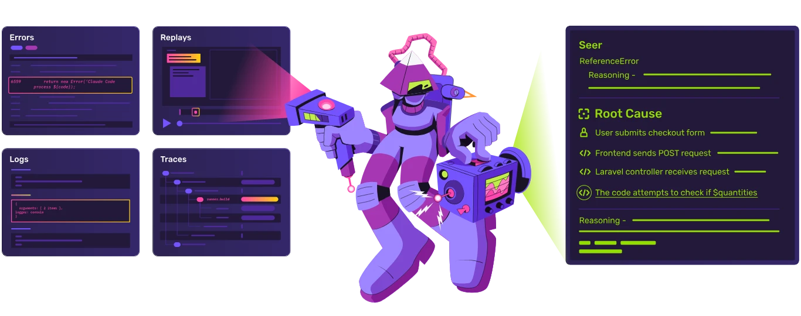
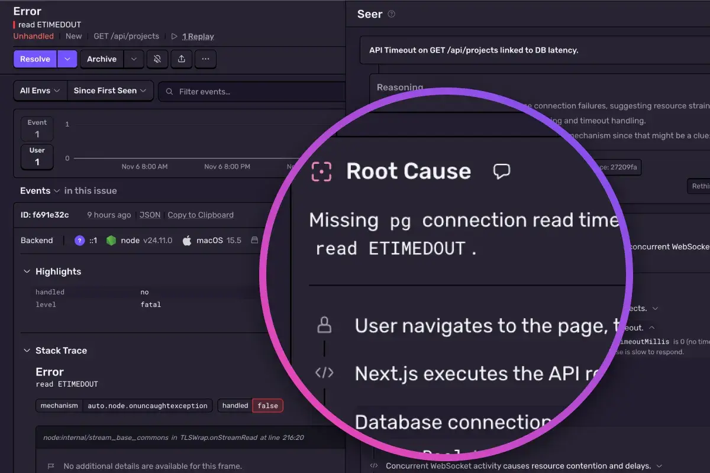
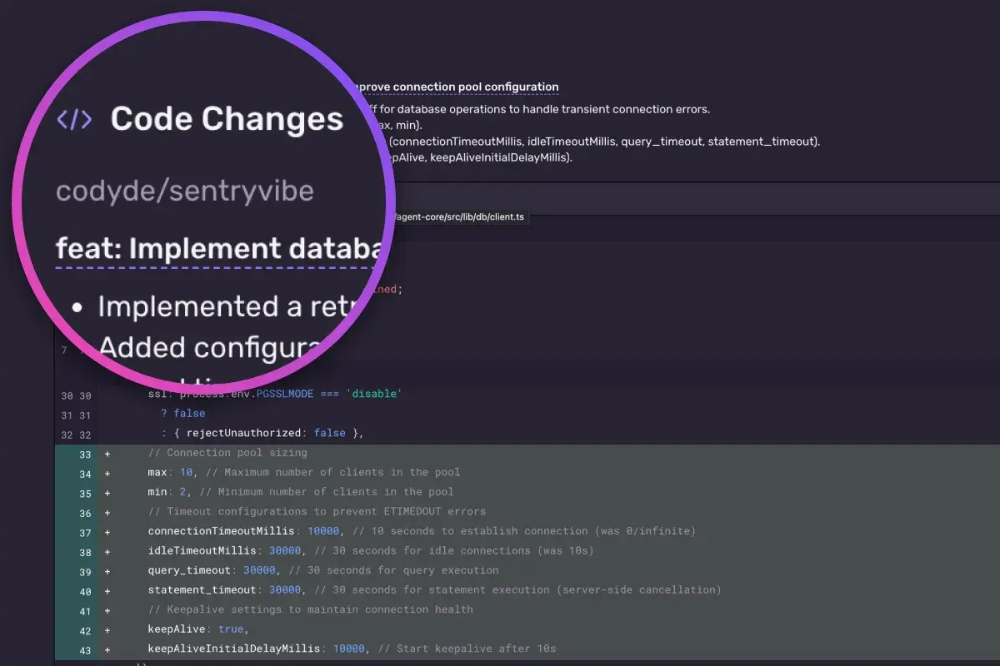
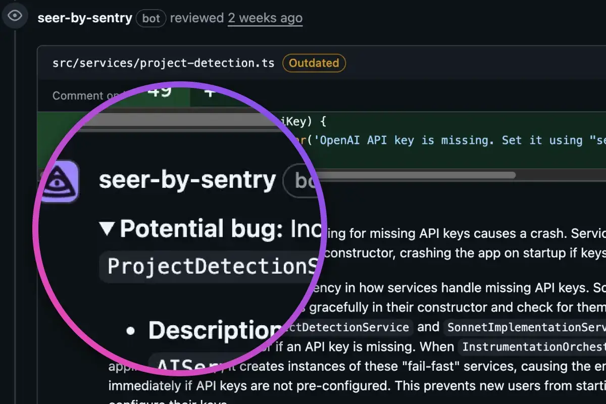

Sentry MCP: fix production issues right from your LLM ➔
Code breaks, fix it faster
Application monitoring software considered "not bad" by millions of developers.



Application monitoring software considered "not bad" by millions of developers.

Catch critical issues before you merge and fix them when they hit prod with Seer, our debugging agent and code reviewer.

Agent tracing helps you catch unexpected output issues, bad tool calls and visualize the spend and performance across all your agents.
From GitHub, Slack, Jira, and Linear to coding agents with Sentry's MCP server, Sentry brings full context to every fix from dev to prod.
Seer, our AI debugger, uses Sentry context – logs, commits, traces, stack trace - so you can stop guessing and it can fix issues for you.



We wouldn't have scaled without Sentry. Most of our incidents are hardware-related—and we debug them all inside Sentry
Nova DasSarma
Systems Lead, Anthropic
Sentry's high-quality tooling helps Disney+ maintain high-quality service to its tens of millions of global subscribers.
Andrew Hay
Director at Disney Streaming Services, Disney+
The signal we get from Sentry is the most reliable indicator of software issues and is used throughout Instacart because it can be easily configured for each service regardless of the language or framework.
Igor Dobrovitski
Infrastructure Software Engineer, Instacart
Five lines of code. That's it. No complex setup, no performance hits, no waiting around.
See -- it's really just one command.
npx @sentry/wizard@latest -i nextjs
Grab the Sentry React SDK:
npm install @sentry/react
Then put the Sentry init code in its own file and import it first in your app:
import * as Sentry from "@sentry/react";
Sentry.init({
dsn: "https://examplePublicKey@o0.ingest.sentry.io/0",
integrations: [],
// Set `tracePropagationTargets` to control for which URLs trace propagation should be enabled
tracePropagationTargets: [/^\//, /^https:\/\/yourserver\.io\/api/],
});
Grab the Sentry Node SDK:
npm install @sentry/node
Configure your SDK:
const Sentry = require('@sentry/node');
Sentry.init({ dsn: 'https://<key>@sentry.io/<project>' });
Grab the Sentry Python SDK:
pip install --upgrade sentry-sdk
Configure your DSN:
import sentry_sdk
sentry_sdk.init(
"https://<key>@sentry.io/<project>",
# Set traces_sample_rate to 1.0 to capture 100%
# of transactions for Tracing.
# We recommend adjusting this value in production.
enable_tracing=True,
traces_sample_rate=1.0,
)
Just run this command to sign up for and install Sentry.
brew install getsentry/tools/sentry-wizard && sentry-wizard -i android
Signup and install Sentry with just one line of code:
brew install getsentry/tools/sentry-wizard && sentry-wizard -i ios
Security and compliance aren't just checkboxes—they're built into how we run Sentry. We use industry-standard tech and practices to keep your data safe, and we stay out of your way while doing it.
Get started with the only application monitoring platform that empowers developers to fix application problems without compromising on velocity.